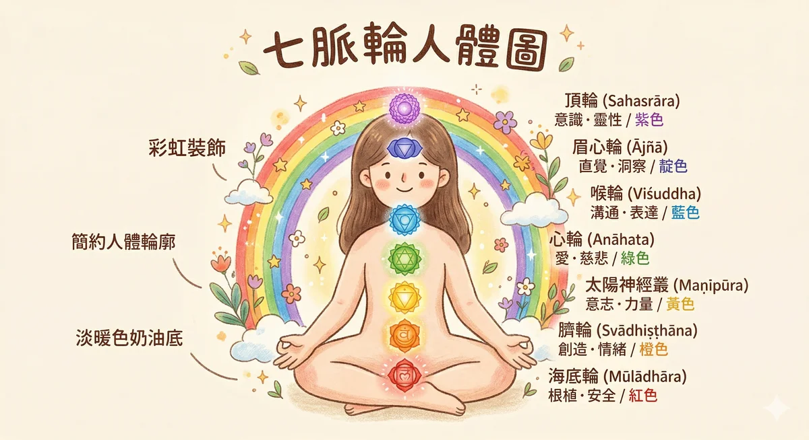

脈輪是什麼
很多人聽到「脈輪」就自動切到「那是玄學」的頻道。合理。但如果你換個角度看，事情就不一樣了。
你的身體裡有七個很重要的內分泌腺體，分別負責不同的荷爾蒙。腎上腺分泌壓力荷爾蒙，性腺管生殖功能，胰腺管血糖，胸腺管免疫，甲狀腺管代謝速度，腦下垂體指揮所有其他腺體，松果體調節你的晝夜節律。這些腺體的位置，從骨盆底到頭頂，剛好和古老瑜伽傳統描述的七個脈輪位置高度重疊。
不是巧合。是古人用了幾千年的身體經驗觀察到的東西，現代內分泌學給了它科學語言。Anodea Judith 在《Wheels of Life》裡做了一個很清楚的整理：每一個脈輪對應一個腺體，每一個腺體影響一組荷爾蒙，每一組荷爾蒙牽動一種情緒和身體狀態。
你大概有過這種經驗：壓力大的時候胃痛，緊張的時候喉嚨乾，傷心的時候胸口悶。那些不是「想像出來的」。壓力讓胰腺和腎上腺加班，緊張讓甲狀腺區域緊繃，傷心影響胸腺所在的胸腔。身體一直在說話，只是我們不一定聽得懂。
- 海底輪 Muladhara → 腎上腺（皮質醇、腎上腺素）→ 安全感
- 臍輪 Svadhisthana → 性腺（睪固酮、雌激素）→ 創造力
- 太陽神經叢 Manipura → 胰腺（胰島素）→ 自信
- 心輪 Anahata → 胸腺（T 細胞）→ 愛與連結
- 喉輪 Vishuddha → 甲狀腺（甲狀腺素）→ 表達
- 眉心輪 Ajna → 腦下垂體（荷爾蒙總指揮）→ 直覺
- 頂輪 Sahasrara → 松果體（褪黑激素）→ 意義
互動式脈輪身體地圖
點擊圖上的脈衝圓點，下方會顯示該脈輪的詳細資訊：位置、腺體、神經叢、對應情緒、推薦精油和水晶。

點擊脈衝圓點查看脈輪詳情
圖上每個脈衝圓點代表一個脈輪的位置，點擊後這裡會顯示完整資訊。
脈輪與身體的科學連結
脈輪不只是「概念」。每一個脈輪的位置都對應到解剖學上真實存在的結構：一個內分泌腺體和一個神經叢。腺體管荷爾蒙，神經叢管訊號傳遞。兩者一起決定了那個區域的「狀態」。
從訊號到感受：身體的傳遞鏈
比如你遇到危險，下視丘通知腰薦神經叢，腎上腺立刻分泌皮質醇和腎上腺素，心跳加速、瞳孔放大、肌肉繃緊。這就是海底輪的「戰或逃」反應。不是什麼神祕力量，是你的自律神經系統在保護你。
七個脈輪的完整科學對應
| 脈輪 | 內分泌腺體 | 神經叢 | 主要荷爾蒙 | 生理功能 |
|---|---|---|---|---|
| 海底輪 | 腎上腺 | 薦神經叢 (Sacral plexus) / 尾骨神經叢 (Coccygeal plexus) | 皮質醇、腎上腺素、去甲腎上腺素 | 壓力反應、戰或逃、血壓調節、免疫基礎 |
| 臍輪 | 性腺（卵巢/睪丸） | 腰神經叢 (Lumbar plexus) / 下腹下神經叢 (Inferior hypogastric plexus) | 雌激素、睪固酮、黃體素 | 生殖功能、情緒穩定、骨密度、肌肉量 |
| 太陽神經叢 | 胰腺 | 腹腔神經叢 (Celiac plexus / Solar plexus) | 胰島素、升糖素 | 血糖調節、消化功能、代謝平衡 |
| 心輪 | 胸腺 | 心臟神經叢 (Cardiac plexus) | 胸腺素（thymosin） | T 細胞成熟、免疫監視、心臟節律 |
| 喉輪 | 甲狀腺 / 副甲狀腺 | 咽神經叢 (Pharyngeal plexus) / 頸神經叢 (Cervical plexus) | T3、T4（甲狀腺素）、副甲狀腺素 | 全身代謝速率、鈣磷平衡、體溫調節 |
| 眉心輪 | 腦下垂體 | 海綿竇神經叢 (Cavernous plexus) — 內頸動脈周圍交感神經叢 | 生長激素、泌乳素、TSH、ACTH、FSH、LH | 荷爾蒙總指揮，協調所有其他內分泌腺體 |
| 頂輪 | 松果體 | 無明確對應神經叢，直接受交感神經頸上神經節 (SCG) 調控 | 褪黑激素（melatonin） | 晝夜節律、睡眠品質、季節性生理調節 |
注意一件有意思的事：太陽神經叢的英文就是 Solar plexus，跟第三個脈輪的名字一模一樣。這不是翻譯巧合。解剖學上的腹腔神經叢（Celiac plexus）因為它的神經纖維向四面八方輻射，看起來像太陽的光芒，所以也被叫做 Solar plexus。古印度瑜伽傳統把第三個脈輪叫做 Manipura（光之城），兩者描述的是同一個東西：你肚子裡那個像太陽一樣向外放射的神經中心。
另外一個值得提的是心臟神經叢。心臟不只是一個幫浦，它有自己的「小腦」。HeartMath Institute 的研究發現，心臟有超過 40,000 個神經元，能獨立感知和記憶。心輪對應的不只是「愛」這個抽象概念，而是心臟周圍真實存在的神經網路，它會影響你的情緒處理和決策品質。
參考：Armour JA (2007). The little brain on the heart. Cleveland Clinic Journal of Medicine, 74(Suppl 1), S48-S51. / McCraty R et al. (2009). The coherent heart: Heart-brain interactions, psychophysiological coherence, and the emergence of system-wide order. Integral Review, 5(2). / Judith A (2004). Eastern Body, Western Mind. Celestial Arts.
七脈輪完整個論
點開每一張卡片，看看那個區域正在跟你說什麼。平衡的時候是什麼感覺，卡住的時候身體會發出哪些訊號。每個脈輪都附了精油和水晶的對應，還有一個你今天就能做的小練習。
海底輪 Muladhara
對應的人生課題
安全感、生存、紮根。最基本的那個問題：我在這個世界上站得穩嗎？
內分泌與神經叢
腎上腺分泌皮質醇（cortisol）和腎上腺素（adrenaline），由薦神經叢和尾骨神經叢支配。長期焦慮的人，這裡幾乎都在超時工作。皮質醇長期偏高會影響免疫功能、睡眠品質和骨密度。
對應器官
骨盆底、脊椎底端、大腸下段、腿部、足部、骨骼系統。骨盆底肌群的張力直接影響你站立和走路時的穩定感。
平衡的感覺
- 腳踩在地上很穩
- 對基本生活有安全感
- 睡得著、吃得下
- 不會動不動就覺得世界要崩塌
失衡徵兆
- 莫名焦慮、恐懼感揮之不去
- 下背痛、腿部無力、骨盆底鬆弛
- 囤積行為、過度節省
- 頻繁搬家、換工作，像沒有根
- 免疫力下降，動不動就感冒
平衡方法
- 赤腳接地（Earthing），每天 5 分鐘
- 深蹲、瑜伽的樹式、山式
- 整理居住環境，營造安定感
- 規律作息，建立日常節奏
對應精油
岩蘭草 Vetiver、廣藿香 Patchouli、雪松 Cedarwood（泥土和木質調，幫你回到身體裡）
對應水晶
紅碧玉 Red Jasper、黑曜石 Black Obsidian、煙晶 Smoky Quartz（穩定、紮根、保護）
今天就能做的小練習
赤腳踩在地上 5 分鐘。草地、泥土、木地板都行。把注意力放在腳底和地面接觸的感覺：溫度、紋理、壓力。你的腳底有湧泉穴（腎經起點），接地的感覺會直接回饋給腎上腺。研究顯示接地可以降低皮質醇、改善睡眠品質。
臍輪 Svadhisthana
對應的人生課題
創造力、情感、親密關係。你允許自己感受嗎？你敢不敢享受快樂？
內分泌與神經叢
性腺分泌睪固酮和雌激素，由下腹下神經叢和腰神經叢支配。這些荷爾蒙影響的不只是生殖功能，還有情緒起伏、創造衝動、和身體對愉悅的感受力。更年期荷爾蒙劇烈變化時，這個區域的感受最明顯。
對應器官
子宮/卵巢/睪丸、膀胱、腎臟下段、薦椎、髖關節。骨盆區域的血液循環和筋膜張力，直接影響你的情緒流動性。
平衡的感覺
- 情感可以自由流動，該哭就哭
- 有創造力、靈感常來
- 享受身體的感受，不帶罪惡感
- 親密關係裡感覺自在
失衡徵兆
- 罪惡感很重，享受快樂就覺得不應該
- 情感壓抑、什麼都悶著
- 下腹悶脹、經期不順、泌尿反覆感染
- 創造力枯竭，像電池沒電
- 對自己的身體感到羞恥
平衡方法
- 泡溫水澡或泡腳（水元素連結）
- 髖關節伸展、蝴蝶式、鴿式
- 允許自己做「沒有生產力」的事
- 跳舞、畫畫，任何創造性活動
對應精油
甜橙 Sweet Orange、依蘭 Ylang Ylang、檀香 Sandalwood（溫暖花香調，打開感官）
對應水晶
紅玉髓 Carnelian、月光石 Moonstone、橘色方解石 Orange Calcite（創造力、情緒流動）
今天就能做的小練習
泡一個溫水澡，水溫大約 38-40 度，不需要很燙。臍輪對應的元素是水，讓身體被溫水包圍，本身就是在重新建立你和感受之間的連結。沒有浴缸？拿臉盆裝溫水泡腳 15 分鐘也行。重點是讓「水」碰到身體，同時允許自己什麼都不想。
太陽神經叢 Manipura
對應的人生課題
自信、個人力量、意志力。你相信自己嗎？做決定的時候會不會一直回頭看別人？
內分泌與神經叢
胰腺分泌胰島素和升糖素，由腹腔神經叢（Solar plexus）支配。這是人體最大的自律神經叢，被稱為「腹部的大腦」，管轄整個消化系統。有沒有注意過，壓力大的時候特別想吃甜的？那就是這裡在喊救命。腸道有超過一億個神經元，是除了大腦之外最大的神經系統。
對應器官
胃、肝、膽、脾、胰臟、小腸上段、腹部肌群。「腸腦軸」（gut-brain axis）的研究顯示，腸道的神經系統直接影響情緒和認知功能。
平衡的感覺
- 自信但不自大
- 有主見、敢做決定
- 消化順暢、精力充沛
- 對批評有韌性，不會被一句話打倒
失衡徵兆
- 自卑、覺得自己不夠好
- 控制欲太強或太沒主見
- 胃痛、消化不良、脹氣
- 容易被別人的情緒帶走
- 血糖不穩定，餐後昏沉
平衡方法
- 腹式呼吸，直接按摩腹腔神經叢
- 核心肌群訓練（棒式、船式）
- 減少精緻糖，穩定血糖
- 練習說「不」，從小事開始
對應精油
檸檬 Lemon、薑 Ginger、迷迭香 Rosemary（清新提振，像把腦袋裡的霧吹散）
對應水晶
黃水晶 Citrine、虎眼石 Tiger's Eye、黃鐵礦 Pyrite（自信、意志力、行動力）
今天就能做的小練習
坐下來，把雙手放在肚子上。用鼻子吸氣，讓肚子像氣球一樣鼓起來，數到 4。嘴巴吐氣，肚子慢慢收回來，數到 6。做 10 次。吐氣比吸氣長，是啟動副交感神經最簡單的方式。10 次做完，你的胃應該會覺得比較鬆。如果有檸檬，切一片放在旁邊聞著就好。
心輪 Anahata
對應的人生課題
愛、慈悲、連結、原諒。你愛得起嗎？你敢讓別人靠近嗎？
內分泌與神經叢
胸腺製造 T 細胞，是免疫系統的核心，由心臟神經叢支配。心碎的時候免疫力會下降，這不是比喻，是真的。研究顯示喪親者在失去親人後 6 個月內的免疫功能顯著下降。胸腺在青春期後開始萎縮，但呼吸練習和正向情緒可以幫它維持活力。心臟本身有超過 40,000 個神經元，能獨立處理訊息。
對應器官
心臟、肺、胸腺、上背部（肩胛骨之間）、手臂、手掌。胸椎第 4-6 節的自律神經分布，直接影響心肺功能。
平衡的感覺
- 有愛的能力，也能接受愛
- 同理心自然流露
- 能原諒，不是忘記，是放下
- 呼吸深長、胸口舒展
失衡徵兆
- 孤獨感、覺得沒人懂
- 嫉妒、佔有欲、或害怕親密
- 胸悶、呼吸淺、上背痛
- 反覆感冒、過敏加重
- 過度付出，照顧所有人卻忘了自己
平衡方法
- 感恩日記，每天寫 3 件小事
- 胸腔伸展、開肩練習
- 深呼吸到胸腔完全擴張
- 擁抱（包括自己抱自己）
對應精油
玫瑰 Rose、天竺葵 Geranium、乳香 Frankincense（花香深沉，打開心門最直接的鑰匙）
對應水晶
粉晶 Rose Quartz、綠東陵 Green Aventurine、孔雀石 Malachite（無條件的愛、心的保護）
今天就能做的小練習
把雙手交疊放在胸口。閉上眼睛，不需要想什麼，就感受手掌的溫度傳到胸腔。吸氣的時候讓胸口完全擴張，吐氣的時候肩膀往下放鬆。做 2 分鐘。2003 年 Emmons 和 McCullough 的研究顯示，每週記錄感恩事項的人在 10 週後幸福感顯著提升。心輪需要的是「打開」，感恩是最溫和的打開方式。
喉輪 Vishuddha
對應的人生課題
表達、溝通、真實。你說得出心裡話嗎？還是永遠在配合別人的劇本？
內分泌與神經叢
甲狀腺和副甲狀腺由咽神經叢和頸神經叢支配。甲狀腺控制全身代謝速率，代謝太快人焦躁，太慢人無力。台灣女性甲狀腺問題的比例偏高，回頭看常常發現有一段很長的時間都在壓抑自己不能說的話。副甲狀腺管鈣磷平衡，鈣不夠人容易緊張抽搐。
對應器官
甲狀腺、副甲狀腺、喉嚨、聲帶、頸椎、下顎、口腔、食道上段。迷走神經（vagus nerve）從腦幹經過喉嚨一路到腸道，是副交感神經的主幹。
平衡的感覺
- 說話誠實但不傷人
- 聲音有力、表達清晰
- 敢說不，也敢說我需要
- 脖子和肩膀放鬆
失衡徵兆
- 話到嘴邊就吞回去，怕衝突
- 反覆喉嚨痛、慢性咳嗽、聲音沙啞
- 甲狀腺功能異常（亢進或低下）
- 肩頸僵硬、牙齒問題
- 覺得「說了也沒用」「沒人在聽」
平衡方法
- 唱歌、朗讀，讓聲帶震動
- 寫日記，把說不出口的寫下來
- 頸部伸展和旋轉
- 練習在小事上表達真實想法
對應精油
尤加利 Eucalyptus、薄荷 Peppermint、羅馬洋甘菊 Roman Chamomile（清涼通暢，像打開一扇窗）
對應水晶
海藍寶 Aquamarine、天青石 Celestite、藍紋瑪瑙 Blue Lace Agate（溝通、表達、平靜）
今天就能做的小練習
哼歌 3 分鐘。隨便什麼歌，在浴室唱、在車上唱、帶著耳機唱。哼歌的振動會直接刺激迷走神經，身體會從交感神經（緊繃模式）切換到副交感神經（放鬆模式）。很多人唱完會想哭，那代表有東西被鬆開了。
眉心輪 Ajna
對應的人生課題
直覺、洞察、智慧。你有沒有過一種感覺：明明沒有證據，但就是知道某件事會發生？
內分泌與神經叢
腦下垂體是內分泌系統的總指揮，被稱為「master gland」。它只有碗豆大小，卻指揮所有其他腺體什麼時候分泌、分泌多少。周圍由海綿竇神經叢（內頸動脈交感神經叢）支配。直覺清晰的人，荷爾蒙通常也比較平衡，因為指揮官狀態好，整個樂團就不會走音。
對應器官
腦下垂體、下視丘、眼睛、鼻竇、前額、小腦。腦下垂體前葉分泌 6 種荷爾蒙（GH、PRL、TSH、ACTH、FSH、LH），後葉儲存 2 種（ADH、OXT）。幾乎影響全身。
平衡的感覺
- 直覺敏銳、常常猜對
- 判斷力好，不容易被帶風向
- 理性和感性之間有平衡
- 想像力豐富，看得到全局
失衡徵兆
- 迷惑、什麼都搞不清楚
- 偏頭痛、眼睛疲勞
- 失眠、思緒停不下來
- 過度理性，不相信感覺
- 做惡夢，夢境混亂不安
平衡方法
- 靜坐冥想，專注眉心
- 減少螢幕時間，讓眼睛休息
- 記錄夢境，練習直覺力
- 在做決定前先聽聽身體的感覺
對應精油
乳香 Frankincense、薰衣草 Lavender、快樂鼠尾草 Clary Sage（安定思緒，打開內在視野）
對應水晶
紫水晶 Amethyst、青金石 Lapis Lazuli、螢石 Fluorite（直覺、洞察、清明）
今天就能做的小練習
閉上眼睛，把注意力集中在兩眉之間的那個點。不需要用力盯，就輕輕地把意識放在那裡。保持 3 分鐘。瑜伽傳統裡叫做「Trataka」，現代研究將其歸類為專注力冥想（focused attention meditation），對減少心智游離和改善注意力有明確效果。如果腦袋一直跑想法，就數呼吸。
頂輪 Sahasrara
對應的人生課題
意義、連結、超越。你為什麼活著？你跟這個世界的關係是什麼？這不是哲學課考題，是每個人遲早都會問自己的問題。
內分泌與神經叢
松果體分泌褪黑激素（melatonin），調節晝夜節律。2017 年諾貝爾生理醫學獎就是頒給晝夜節律基因機制的研究（Jeffrey Hall、Michael Rosbash、Michael Young）。松果體不隸屬於特定神經叢，而是直接受交感神經頸上神經節（SCG）調控。日出而作、日落而息不是農夫的事，是你身體每個細胞都在做的事。
對應器官
松果體、大腦皮質、頭頂、中樞神經系統整體。松果體被古人稱為「第三隻眼」，解剖學上它確實含有和視網膜相似的感光細胞。
平衡的感覺
- 心靈平靜、有使命感
- 感覺自己跟什麼更大的東西連在一起
- 不害怕未知
- 作息規律，睡眠品質好
失衡徵兆
- 空虛、不知道自己為什麼在這裡
- 迷失方向、什麼都提不起勁
- 日夜顛倒、作息混亂
- 光敏感、聲音敏感
- 跟世界格格不入的隔離感
平衡方法
- 規律作息，讓松果體正常運作
- 減少睡前藍光（手機、電腦）
- 到大自然裡待一段時間
- 刻意留白，什麼都不做
對應精油
檀香 Sandalwood、橙花 Neroli、乳香 Frankincense（靜定深沉，幾千年來冥想都用它們）
對應水晶
白水晶 Clear Quartz、紫黃晶 Ametrine、赫基蒙鑽石 Herkimer Diamond（清明、連結、純淨）
今天就能做的小練習
什麼都不做。認真地、刻意地，給自己 10 分鐘。關掉手機（或至少開飛航模式），不聽音樂、不看書、不想事情。就是坐著或躺著，讓自己存在。你可能會覺得無聊、焦躁、手癢想拿手機。讓那些感覺在，不要對抗。頂輪的功課是「存在本身就夠了」。
脈輪速查對照表
不想看長文的時候，這張表就夠了。存起來當速查卡用。
| 脈輪 | 位置 | 腺體 | 神經叢 | 課題 | 失衡情緒 | 精油 | 水晶 |
|---|---|---|---|---|---|---|---|
| 海底輪 | 脊椎底部 | 腎上腺 | 薦/尾骨 | 安全感 | 恐懼、焦慮 | 岩蘭草、雪松 | 紅碧玉、黑曜石 |
| 臍輪 | 下腹 | 性腺 | 下腹下 | 創造力 | 罪惡感、壓抑 | 甜橙、依蘭 | 紅玉髓、月光石 |
| 太陽神經叢 | 上腹/胃 | 胰腺 | 腹腔(Solar) | 自信 | 自卑、無力 | 檸檬、薑 | 黃水晶、虎眼石 |
| 心輪 | 胸口 | 胸腺 | 心臟 | 愛與連結 | 孤獨、嫉妒 | 玫瑰、天竺葵 | 粉晶、綠東陵 |
| 喉輪 | 喉嚨 | 甲狀腺 | 咽/頸 | 表達 | 壓抑、沉默 | 尤加利、薄荷 | 海藍寶、天青石 |
| 眉心輪 | 眉心 | 腦下垂體 | 海綿竇 | 直覺 | 迷惑、混亂 | 乳香、薰衣草 | 紫水晶、青金石 |
| 頂輪 | 頭頂 | 松果體 | 頸上神經節 | 意義 | 空虛、迷失 | 檀香、橙花 | 白水晶、紫黃晶 |
脈輪自檢工具
不是正式的心理測驗，是一個快速的身體掃描。勾選最近兩週符合你狀況的項目，看看哪些脈輪在喊你注意。勾得越多不代表越嚴重，只是代表那個區域目前比較需要關注。
脈輪失衡的身體信號
當某個區域長期處於壓力狀態，身體會用它自己的語言告訴你。以下整理的是臨床上常見的對應關係。不是說有這些症狀就一定是某個脈輪的問題，而是身體在給你一個方向去覺察。
海底輪失衡信號
身體層面
- 下背痛，尤其是找不到明確原因的慢性痠痛
- 便秘或消化遲緩，腸道像罷工一樣
- 腿無力、膝蓋痠軟，走路沒有底氣
- 免疫力下降，動不動就感冒
心理層面
- 常搬家、換工作，像一棵沒有根的樹
- 沒有歸屬感，走到哪裡都覺得自己是外人
- 對金錢有強烈的不安全感，即使存款夠用還是焦慮
- 囤積物品，丟不掉東西
日常小練習
赤腳踩在草地或泥土上 5 分鐘。沒有草地的話，站在家裡的地板上，把注意力放在腳底和地板接觸的感覺。科學上叫「接地效應」（Earthing），研究顯示接地可以降低皮質醇、改善睡眠品質。
臍輪失衡信號
身體層面
- 經期不規律、經痛、婦科反覆問題
- 下腹部經常脹氣、悶痛
- 泌尿系統反覆感染
- 髖關節僵硬、腰薦區域痠痛
心理層面
- 創造力枯竭，做什麼都提不起勁
- 享受快樂的時候會有罪惡感
- 情緒要嘛關太緊（壓抑），要嘛關不住（爆發）
- 對自己的身體感到羞恥
日常小練習
泡一個溫水澡或溫水泡腳 15 分鐘。臍輪的元素是「水」，讓身體被溫水包圍，本身就是在重新建立你和感受之間的連結。甜橙的香氣會啟動邊緣系統的愉悅迴路，幫助你練習「允許自己感覺舒服」。
太陽神經叢失衡信號
身體層面
- 消化問題：胃脹氣、胃酸過多、消化不良
- 血糖不穩定，餐後昏沉或莫名飢餓
- 腹部肌肉長期緊繃，像一直在防禦
- 慢性疲勞，明明睡夠了還是沒精神
心理層面
- 控制欲很強，什麼都想管，管不到就焦慮
- 或者反過來，習慣被控制，不敢說不
- 做決定反覆猶豫，決定了又後悔
- 在意別人的評價到影響日常生活的程度
日常小練習
做 10 次腹式呼吸。手放在肚臍上方，吸氣 4 秒讓肚子鼓起來，憋住 2 秒，吐氣 6 秒讓肚子凹下去。深呼吸的震動會直接刺激腹腔神經叢，啟動副交感神經。手邊有檸檬的話，切一片聞一下，清新感會幫你從焦慮裡跳出來。
心輪失衡信號
身體層面
- 胸悶、呼吸淺，像有石頭壓在胸口
- 免疫力差，反覆感染，過敏加重
- 上背痛，肩胛骨之間緊繃
- 血壓不穩定
心理層面
- 無法原諒某個人或某件事
- 害怕親密關係，別人靠太近就想逃
- 過度付出，把所有人照顧好卻忘了自己
- 覺得自己不值得被愛
日常小練習
每天寫 3 件讓你感恩的事。不用是偉大的事，「今天的咖啡很好喝」「陽光照進來的角度剛好」都可以。感恩練習是目前正向心理學研究中證據最強的介入之一，心輪需要的是「打開」，感恩是最溫和的打開方式。
喉輪失衡信號
身體層面
- 甲狀腺功能異常（亢進或低下）
- 喉嚨常發炎、聲音沙啞、頸部僵硬
- 牙齒和牙齦問題反覆發作
- 肩頸痠痛，特別是靠近脖子的地方
心理層面
- 說不出真心話，明明不同意卻說「好」
- 害怕衝突到會壓抑自己所有的需求
- 或反過來，說話很衝，用攻擊來掩蓋脆弱
- 覺得「說了也沒用」「沒人在聽」
日常小練習
唱歌 5 分鐘。在浴室、在車上、帶著耳機唱都可以。不需要唱得好聽，重點是讓聲帶震動、讓喉嚨打開。唱歌 = 震動喉嚨 = 刺激迷走神經 = 身體切換到放鬆模式。
眉心輪失衡信號
身體層面
- 頭痛，特別是前額和太陽穴
- 失眠，腦子關不掉，像電腦開了 50 個分頁
- 眼睛疲勞、視力模糊（排除眼疾後）
- 荷爾蒙失調（腦下垂體功能下降時全身受影響）
心理層面
- 判斷力變差，什麼都搞不清楚
- 過度理性，完全不信任感覺
- 或過度感性，被情緒帶著走
- 做惡夢，夢境混亂且不安
日常小練習
靜坐 5 分鐘，專注眉心。眉心對應松果體的投射區。2008 年 FASEB Journal 的研究發現，乳香含有的乙酸乳香脂（incensole acetate）能啟動大腦中與情緒相關的 TRPV3 離子通道，可能是乳香在冥想中被使用數千年的科學基礎。
頂輪失衡信號
身體層面
- 光敏感、聲音敏感，對環境刺激過度反應
- 慢性疲勞（不是身體的累，是那種「存在本身很累」的感覺）
- 頭頂偶爾會有壓迫感或刺痛感
- 自律神經失調的各種症狀
心理層面
- 迷失方向，不知道自己為什麼活著
- 存在焦慮，半夜會突然想到「活著有什麼意義」
- 與世隔絕的感覺，像隔著一層玻璃看世界
- 連以前喜歡的事都不想做了
日常小練習
什麼都不做。認真地、刻意地，給自己 10 分鐘什麼都不做。不看手機、不聽音樂、不想事情。就是坐著或躺著，讓自己存在。頂輪的課題是「連結」，和比你更大的東西連結。現代人的頂輪最常見的問題是「太忙了」，忙到沒有空間去感受「活著」這件事本身。
台灣人的脈輪常見問題
做了三十幾年的美業，看過幾千個人的身體。台灣人的脈輪問題有一些很明顯的模式，跟我們的文化和生活方式直接相關。
台灣人的工時全球數一數二，加上「不要讓別人失望」的文化，胃是最先抗議的器官。腸胃科永遠是門診量最高的科別之一。壓力大的時候特別想吃甜的、炸的，那是太陽神經叢在喊救命。腹腔神經叢長期處於交感神經亢奮狀態，消化功能就會當機。
平衡提示：午休時做 10 次腹式呼吸。吸 4 秒、憋 2 秒、吐 6 秒。一天做一次，胃就能稍微喘口氣。
「說了也沒用」「不要造成別人困擾」「乖就好」。從小被教育要配合、要和諧的人，喉輪幾乎都是卡的。台灣女性甲狀腺問題的比例偏高，有研究指出甲狀腺疾病與長期情緒壓抑有相關性。很多人在做臉或做 SPA 的時候突然講了一堆心裡話，那就是喉輪在找出口。
平衡提示：每天唱一首歌。在浴室、在車上、帶著耳機都行。不用唱得好聽，讓喉嚨震動就是在做覺察。
台灣的人際關係很緊密，但緊密有時候會變成壓力。孝順的壓力、婆媳的壓力、朋友圈的社交壓力。很多人活在「我必須照顧好所有人」的模式裡，心輪是打開的，但打開的方向只有往外。往外給太多，給到自己空了。胸悶、淺呼吸、肩胛骨之間緊繃，是心輪過度消耗的典型信號。
平衡提示：每天對自己說一句好話。不是什麼「我很棒」的正向喊話，是像跟朋友說話那樣：「今天辛苦了，你已經做得很好了。」
房價、物價、工作不穩定、看不到未來。生存焦慮是台灣年輕世代的集體課題。腎上腺長期高轉速運作，皮質醇居高不下。睡不好、淺眠、容易驚醒。有些人看起來很正常、很努力，但底下一直有一股「不知道自己站在哪裡」的不安。
平衡提示：每天赤腳踩地板 5 分鐘，或者抱著一個枕頭、蓋著一條重被。物理上的「穩定感」會直接送訊號給腎上腺：現在安全，可以休息了。
手機使用時間全球前幾名。螢幕的藍光直接影響松果體的褪黑激素分泌，導致入睡困難和睡眠品質下降。更深層的問題是：資訊太多，直覺就鈍了。大腦一直在處理外來刺激，沒有空間去「聽」自己內在的聲音。
平衡提示：睡前 30 分鐘放下手機。先從 15 分鐘開始也行。用那段時間泡腳、伸展、或者就安靜坐著。
「享受」在很多台灣家庭裡是一個微妙的詞。「你怎麼不去做正事」「又在浪費時間」。從小被這樣教大的人，享受快樂的時候會有一股自動冒出來的罪惡感。臍輪管的就是「你允不允許自己感受愉悅」。很多人的創造力枯竭，不是沒有才華，是不允許自己放鬆。
平衡提示：每週給自己一個小時做「沒有生產力」的事。泡澡、畫畫、逛街、發呆。不需要理由，不需要產出。
每天 5 分鐘的脈輪平衡練習
不需要瑜伽墊，不需要安靜的房間。在辦公室、在捷運上、在等小孩下課的時候都能做。重點不是做得「對」，是做了就好。
雙腳踩穩地板（有鞋子也行）。感受腳底和地面的接觸。深呼吸 3 次：吸到肚子鼓起來，吐到肚子完全凹下去。這同時照顧了海底輪（接地）和太陽神經叢（腹式呼吸）。
從頭頂到腳底，快速「掃」一遍。哪裡緊？哪裡痛？哪裡沒有感覺？不需要分析，不需要改變，就是注意到。身體最怕的不是痛，是你完全不理它。
雙手在背後交握，肩膀往後打開，胸口推向前方。深呼吸 3 次。這個動作直接拉開心輪對應的胸椎區域和心臟神經叢。做完你會發現呼吸自動變深了。
頭慢慢往右倒，左手輕輕放在頭頂增加一點點重量，停 15 秒。換邊。再做一次前後：低頭 15 秒，抬頭看天花板 15 秒。喉輪對應的頸椎和肩頸肌群，一分鐘就能鬆開大半。
閉上眼睛，把注意力放在眉心。不需要想什麼，就安靜地存在 60 秒。這一分鐘同時照顧了眉心輪和頂輪。做完睜開眼睛的時候，你會發現世界清楚了一點點。
7 天脈輪覺察挑戰
一天對應一個脈輪，從海底輪開始往上走。每天只做一件小事，花不到 10 分鐘。七天之後你不會「脈輪全開」（沒有這種事），但你會比現在更清楚自己的身體在說什麼。
Day 1（週一）海底輪日
今天的練習
赤腳踩在地上 5 分鐘。草地最好，公園的泥土也行，家裡的木地板或磁磚也可以。重點是感受腳底和地面之間的接觸，溫度、紋理、壓力。你會發現自己的呼吸自然變慢了。
如果有精油
岩蘭草（Vetiver）。氣味很像潮濕的泥土，聞起來就是「根」的味道。岩蘭草的倍半萜烯成分含量很高，研究顯示倍半萜烯類化合物有鎮靜神經系統的作用。
Day 2（週二）臍輪日
今天的練習
泡一個溫水澡，或者至少用溫水泡腳 15 分鐘。臍輪的元素是水，讓身體被溫水包圍，允許自己感受「舒服」這件事。今天的練習就是：不帶罪惡感地讓自己舒服。
如果有精油
甜橙（Sweet Orange）。含有 90% 以上的右旋檸檬烯（d-Limonene），在動物實驗中顯示有抗焦慮的效果。甜甜的、暖暖的，像冬天剝開一顆橘子。
Day 3（週三）太陽神經叢日
今天的練習
做 10 次腹式呼吸。手放在肚臍上方。吸氣 4 秒讓肚子鼓起來；憋住 2 秒；吐氣 6 秒讓肚子凹下去。吐氣比吸氣長，是啟動副交感神經最簡單的方式。
如果有精油
檸檬（Lemon）。不需要精油，切一片真的檸檬聞一下也行。日本研究（Komori et al., 1995）發現檸檬精油的香氣對情緒有正向調節效果。
Day 4（週四）心輪日
今天的練習
寫下 3 件今天讓你感恩的事。可以寫在手機備忘錄裡。「早餐很好吃」「有人讓座給我」「窗外的雲很漂亮」，越具體越好，越小的事越有效。
如果有精油
玫瑰（Rose）。真的大馬士革玫瑰精油很貴，用玫瑰天竺葵（Rose Geranium）也有類似效果。或者更簡單，聞一朵真的花。2009 年的研究顯示，吸入玫瑰精油可以降低焦慮感和皮質醇水平。
Day 5（週五）喉輪日
今天的練習
唱歌或大聲朗讀 5 分鐘。重點不是唱得好聽，是讓聲帶震動、讓喉嚨打開。如果你平常是那種「有話都吞回去」的人，做完之後你會注意到脖子鬆了，呼吸也變深了。
如果有精油
尤加利（Eucalyptus）。桉油醇（1,8-Cineole）成分佔 60-80%，對上呼吸道有直接的舒緩效果，這也是為什麼很多喉糖和感冒藥膏都含有這個成分。
Day 6（週六）眉心輪日
今天的練習
靜坐 5 分鐘，閉上眼睛，把注意力放在兩眉之間。不需要「看到光」或「感覺到震動」。就是安靜地把注意力放在那個點上。腦袋會跑出各種念頭，讓它跑，不用追也不用趕，它自己會安靜下來。
如果有精油
乳香（Frankincense）。如果你只能擁有一支精油，很多芳療師會推薦這支。含有乙酸乳香脂，2008 年 FASEB Journal 的研究顯示，這個化合物能啟動大腦中與情緒和焦慮相關的 TRPV3 離子通道。
Day 7（週日）頂輪日
今天的練習
什麼都不做。這聽起來很簡單，但其實是七天裡面最難的一天。找 10-15 分鐘，關掉手機，不聽音樂、不看書、不想事情。就是坐著或躺著，讓自己「在」。你可能會覺得無聊、焦躁、手癢想拿手機，那些感覺都是正常的。讓它們在，不要對抗。
如果有精油
不用精油。今天的練習是「什麼都不加」。如果你真的想要一個氣味陪伴，打開窗戶，聞外面的空氣就好。風帶來的氣味每次都不一樣，那就是頂輪的本質：你和這個世界之間的連結，不需要任何媒介。
認知芳療 × 脈輪
這裡要說的事可能會顛覆你對精油的認知。你不需要真的拿一瓶精油在手上，也能啟動脈輪覺察。
想到薄荷，嘴裡是不是有沁涼的感覺？想到酸梅，口水是不是自動出來了？這就是認知芳療的核心。鼻子在聞，但大腦在記憶。嗅覺記憶一旦建立，光是「想到」那個氣味，對應的神經迴路就已經啟動了。
所以你可以這樣做：閉上眼睛。想像你的胸口。現在，想起玫瑰的味道。不需要真的聞到，就讓那個記憶浮起來。感覺到了嗎？那份溫暖的擴散感，就是你的心輪在回應。
這也是為什麼馥靈之鑰的牌卡系統可以在線上運作。牌卡觸發的是氣味記憶和情緒連結，不是物理上的分子擴散。覺察發生在你的意識裡，不在你的鼻子上。有精油當然更好。沒有也完全沒問題。重要的是你願不願意花 3 分鐘，把注意力放回自己身上。
讀完了，然後呢？
知識是起點，覺察是旅程。試試用這些工具，把剛學到的東西變成你自己的體會。